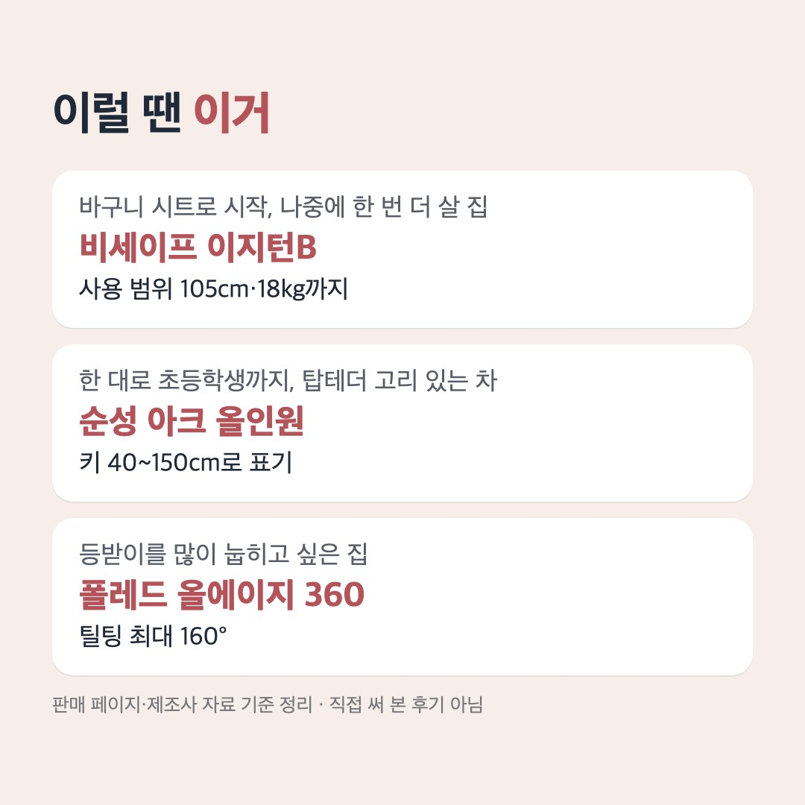

이 페이지는 쿠팡 파트너스 활동의 일환으로, 이에 따른 일정액의 수수료를 제공받습니다.
직접 써 본 후기가 아니라 판매 페이지의 사양표와 제조사 표기를 읽고 정리한 비교예요.
비세이프 이지턴B 몇 살까지? 키 105cm·18kg, 신생아~5세 표기
결론부터
- 신생아 바구니 시트와 서포팅 레그가 달린 i-Size 회전형을 원하면 비세이프 이지턴B(891,620원, 쿠폰 적용가)예요. 다만 사용 범위가 40~105cm·최대 18kg·설명서 약 0~4세(판매 페이지는 신생아~5세)로 적혀 있어, 이 범위를 넘으면 다음 카시트가 필요해요. 주문 전에 받을 제품 라벨의 KC 번호를 판매자에게 확인하세요.
- 한 대로 초등학생까지 쓰는 순성 아크 올인원(신생아~36kg, 40~150cm 표기)은 판매 페이지의 KC 번호가 11월 12일 제품안전정보센터 조회에서 '기간만료'로 나와 링크를 달지 않았어요. 같은 모델명의 새 번호는 '적합'으로 조회되니, 고르려면 라벨 번호부터 판매자에게 확인하세요.
- 등받이를 많이 눕히는 올인원 폴레드 올에이지 360(신생아~13세·36kg, 틸팅 최대 160° 표기)은 상세에 적힌 KC 번호가 같은 조회에서 '기간만료'로 나왔고 '적합'인 다른 번호를 찾지 못해 링크를 달지 않았어요.
📅 가격은 11월 12일 확인값이에요. 지금 가격은 버튼에서 확인하세요.

블로그에서 자세한 비교 읽기다른 비교
이 포스팅은 토스쇼핑 쉐어링크 활동의 일환으로, 이에 따른 일정액의 수수료를 제공받습니다.
💸 토스에서 사는 생필품 보기사기 전 노트 블로그의 다른 비교 글